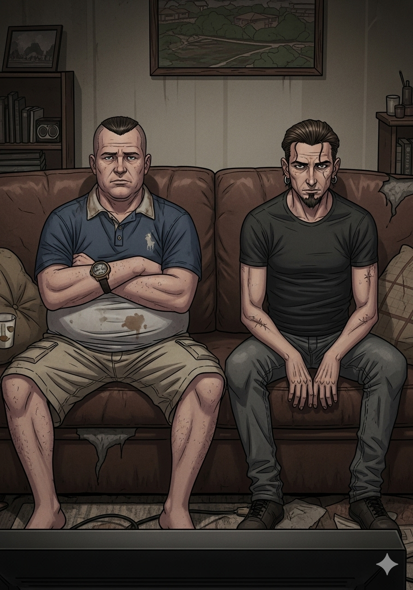
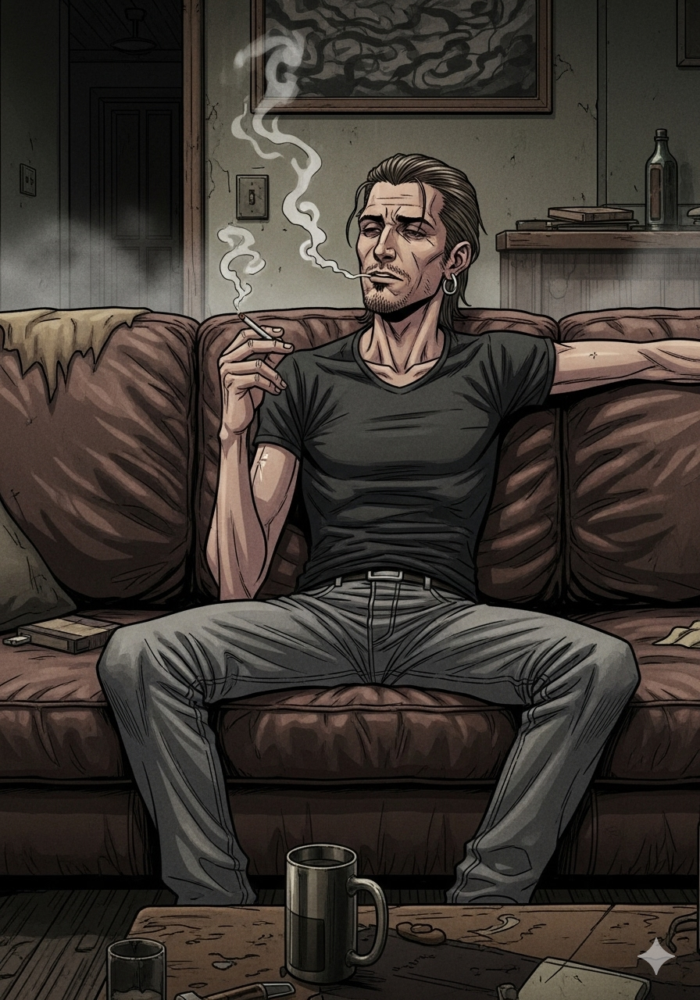
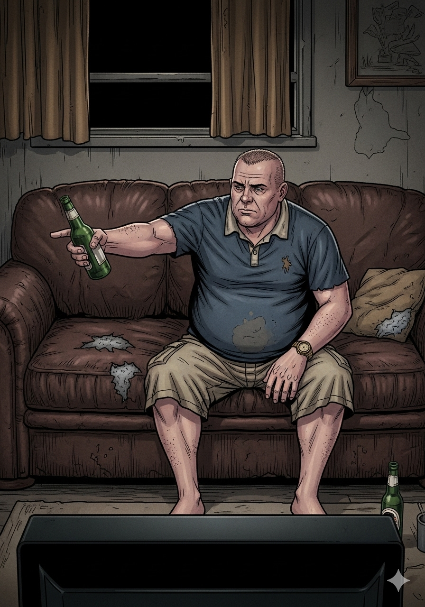
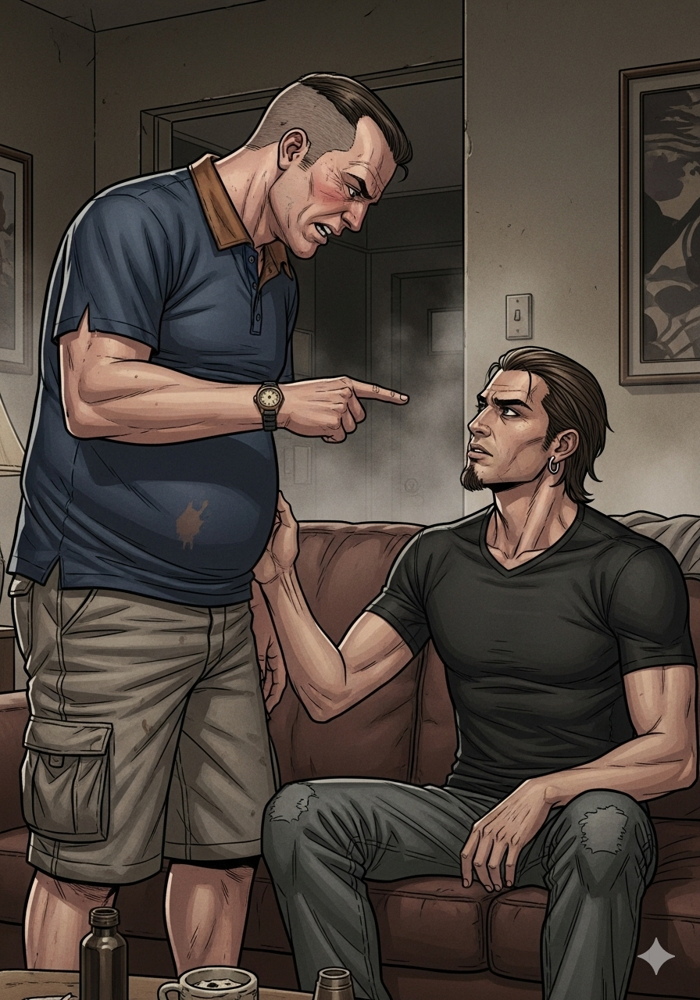
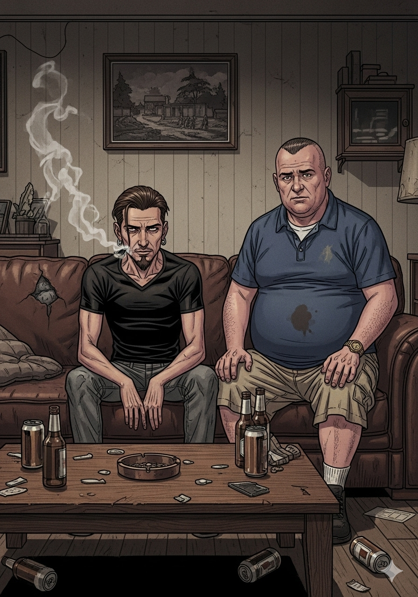
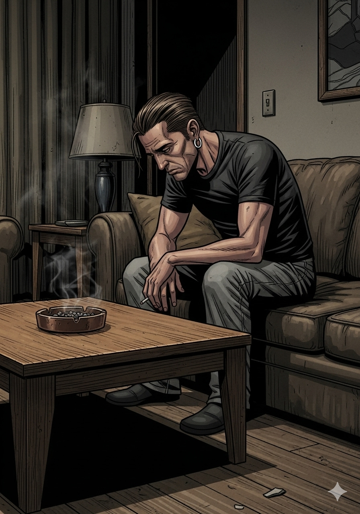
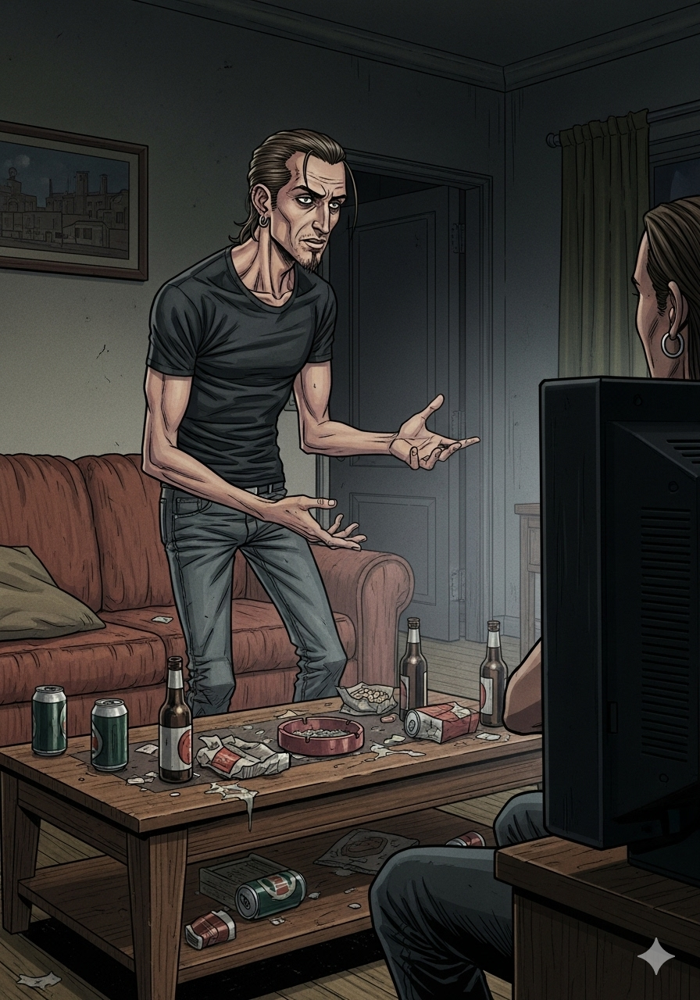
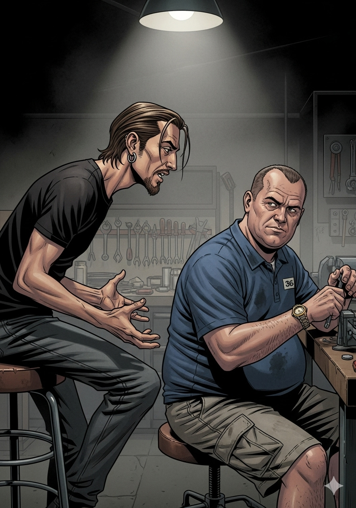

TONI
"¿La precuela de Breaking Bad? ¿El abogado de los trajes de colorines? ¿Eso merece una serie entera?"
RULO
"Jimmy McGill. Un abogado de pacotilla sobreviviendo en Albuquerque. De lo que parece una comedia... sale la historia más trágica del universo Breaking Bad."
Albuquerque, Nuevo México. El sofá de siempre. La pregunta del millón.

RULO
"Empieza muy despacio. Jimmy chapuceando casos de mierda, viviendo en el almacén de una sala de manicuras. No hay explosiones. No hay cartel. Solo un tipo que quiere ser alguien y no puede."
El slow burn más calculado de la historia reciente de la tele.

TONI
"¿Cuándo empieza a ponerse buena de verdad?"
RULO
"Cuando te das cuenta de que no estás viendo un spin-off. Estás viendo una tragedia griega con traje amarillo."
¡BETTER CALL SAUL!!
¡S'ALL GOOD MAN!!

RULO
"Los protagonistas se salen. Pero hay una que se come la serie con cuchillo y tenedor y pide postre."
TONI
"Kim Wexler."
KIM
"Kim no era el plan original. Apareció en la T1. Y se quedó con todo."
Rhea Seehorn. El gran descubrimiento de la televisión de la última década.

RULO
"Mike: pocas palabras, máxima eficacia. Gus Fring construye su red con la frialdad de un ajedrecista. Y luego está Lalo Salamanca..."
Los secundarios a veces superan a los protagonistas. Pocas series pueden decir eso.

TONI
"¿Qué pasa con Lalo?"
RULO
"El mejor villano que ha parido este universo. Gus da miedo porque es frío. Lalo da miedo porque disfruta. Eso es infinitamente peor."
¡LALO!!
¡SALAMANCA!!

RULO
"El guion es casi inmejorable. Cada plano tiene un propósito. Episodios en blanco y negro, en 4:3... esto no es tele normal. Es cine de autor con presupuesto de cable."
TONI
"Entonces... ¿supera a Breaking Bad o no?"
La pregunta que todo el mundo hace. Y que nadie quiere responder.

RULO
"Para mí, no. Breaking Bad es Breaking Bad. Pero que se le acerque tanto ya dice todo. Y la temporada 6..."
Pausa dramática. Necesaria.

TONI
"¿QUÉ PASA CON LA TEMPORADA 6?"
RULO
"Es perfecta. El mejor final que se ha hecho en este universo. Mejor que el de Breaking Bad."
¡KIM!!
"Mira, cuando Breaking Bad termina así, te quedas pensando que eso no lo iguala nadie. Y tienen la cara dura de sacar una precuela. Lo normal sería una cagada monumental. Pues no, joder. Kim Wexler se come la serie con cuchillo y tenedor y pide postre."
— Pachi, versión sin filtros📈 Curva de calidad · 6 temporadas · siempre hacia arriba

TONI
"Yo que venía pensando que iba a ser el abogado gracioso haciendo el imbécil... ¿cómo lo has hecho?"
RULO
"Bienvenido al club. Todos empezamos igual. Nadie sale igual."
El abogado gracioso resultó ser el personaje más trágico del universo.

TONI
"Nota. Ahora mismo."
RULO
"Nueve. La precuela perfecta. No supera a Breaking Bad. Pero la iguala en lo que importa."
S'all good, man.
★ veredicto final · zaska y acción ★
BETTER CALL SAUL
9,0
Netflix / AMC · 6 temporadas · 63 episodios · 2015–2022
Creadores: Vince Gilligan y Peter Gould
Bob Odenkirk · Rhea Seehorn · Jonathan Banks · Michael McKean · Giancarlo Esposito · Tony Dalton
La precuela que nadie esperaba. El final que nadie olvidará.
← Volver al blog
Creadores: Vince Gilligan y Peter Gould
Bob Odenkirk · Rhea Seehorn · Jonathan Banks · Michael McKean · Giancarlo Esposito · Tony Dalton
La precuela que nadie esperaba. El final que nadie olvidará.